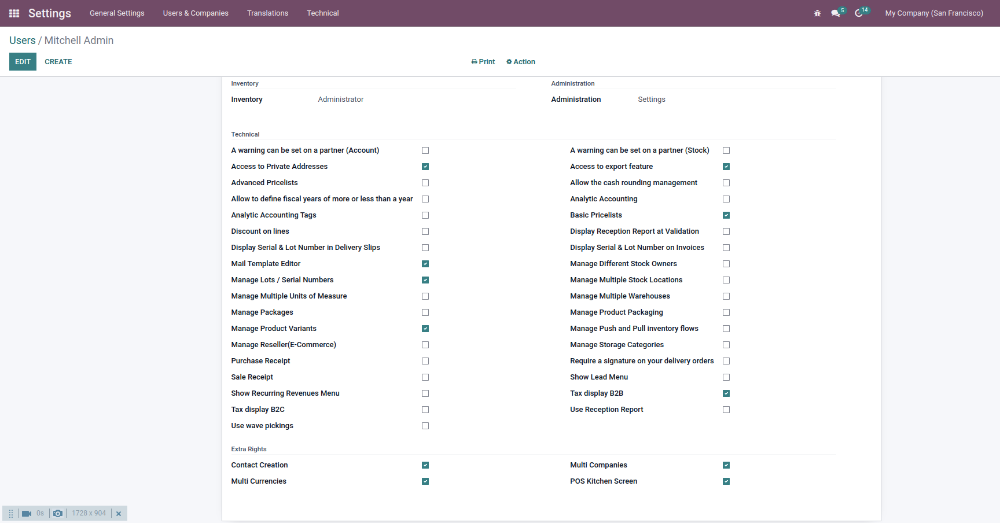
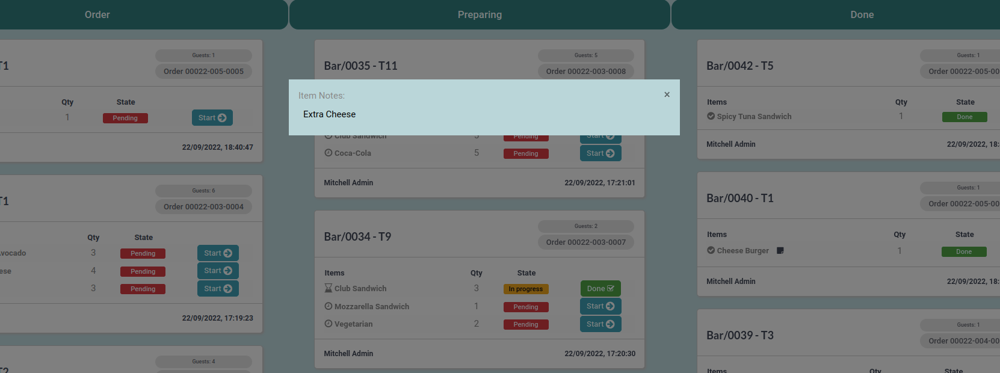

POS Kitchen Screen
Manage Kitchen Orders for POS

Manage Kitchen Orders for POS
With this module you can manage your kitchen orders. By installing this module you can give access to the desired user so that you can view the kitchen screen from the POS window. Also, you can specify which POS to show on the kitchen screen. You can also specify which product category should be shown there..
View POS orders by State.
You can change the State of Order from the Kitchen Screen.
View Ordered item Notes from the Kitchen Screen.
After installation, give the user access to 'POS Kitchen Screen' from user settings.
After giving access for the pos kitchen screen, Restart the page to see 'POS Kitchen Dashboard' after the Preference page Tab.
On POS Window click on the 'Kitchen Screen' menu.
By clicking on the notes icon that comes after the product name, you will see the item notes that are created when the order is placed.
